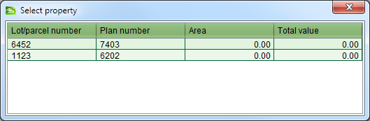

Lodge and Process a Land Registration Application
The following provides detailed steps on how to lodge and process a land registration
application. For information on how to process Land Registration services, refer to the
appropriate Land Registration How To section.
Lodge an Application
The first step when making changes to the land registry is to create an application with the
appropriate service or services. Where those services are likely to require payment, lodging
the application should be done while the agent (or their representative) is in attendance so
that you can provide them with the lodgment notice detailing the fees payable.
Steps
-
-
From the Dashboard select the
 New
application tool to open the Application Details screen.
New
application tool to open the Application Details screen.
-
On the General tab, select the appropriate agent from the Agent dropdown. If the person
making the request is not listed in the drop down list, choose the Other Agent option
at the top of the list and enter the contact details for the person in the fields
provided.
-
On the Services tab, select one or more land registration services depending on the
changes you need to make to the land registry. If you select more than one service, you
should order the services in a logical sequence. E.g. for a discharge, transfer and
mortgage, the Cancel Mortgage service should be at the top, followed by the Transfer
service with the Record Mortgage service at the bottom.
-
On the Property tab, enter the folio reference for the property that is being changed
and add them to the application using the Add property button. In the case of a new
plan, you should add the folio references for the properties being subdivided or
amalgamated (i.e. the properties that will be extinguished) by the plan.
-
You should verify each property using theVerify tool to confirm SOLA contains the appropriate
details for the property. If the Title Exists checkbox is not checked, this may
indicate the folio reference is invalid or the folio has yet to be converted from paper
format. Use the Property Search screen and/or Map Find to attempt to locate the
property record. If you are unsuccessful, check the paper records to determine if the
property information must first be converted into SOLA before any land registration
transactions can proceed (using the Convert to Title service).
-
On the Documents tab, record each of the physical documents provided by the agent. The
documents required are dependent on the service(s) selected. When capturing document
information
-
Ensure you select the appropriate document type and record the document date (i.e.
the date recorded on the face of the physical document) or today’ s date if the
physical document is not dated.
-
You can optionally enter a reference number for the document and a description. The
reference number should be taken from the physical document. If the physical
document does not have any reference number, then this field should be left blank.
-
The Source Agency is the name of the organization that created the physical
document. E.g. For the POA, this may be the name of the grantor. This field is
optional and can be left blank.
-
If you have scanned the document, use the Attachment field to link in the
scanned image. If you have not yet scanned the document, you will need to do this
at a later stage and link it into the document using the Edit Document
functionality available from Document Search.
-
You should also attach a Proof of Identity document for the agent/applicant to the
application. This could be a passport style photo the copy of a birth certificate. This
can be linked directly to the property changes made for the application and used to
help confirm the validity of future property transactions.
-
Map points are optional for Land Registration applications. You can add one by
navigating the map to the location of the property and using the
 Add Application Point tool. If you are
not sure of the location of the property and cannot locate it using the Map Find, then
do not add an Application point.
Add Application Point tool. If you are
not sure of the location of the property and cannot locate it using the Map Find, then
do not add an Application point.
-
Click the
 Save button. This will lodge
the application and produce the lodgment notice. Print the notice and give it to the
agent as proof the application has been lodged. The lodgment notice will indicate the
fee to be paid for the application.
Save button. This will lodge
the application and produce the lodgment notice. Print the notice and give it to the
agent as proof the application has been lodged. The lodgment notice will indicate the
fee to be paid for the application.
Fee Payment
Once the lodgment notice is printed, the agent will need to take the notice to the cashier
in the finance section and arrange payment. When payment has been made, the cashier will
locate the Unassigned application list on the SOLA Dashboard, Open the
application and check the Fee Paid flag on the Fees tab to indicate the application can
continue processing.
Open the
application and check the Fee Paid flag on the Fees tab to indicate the application can
continue processing.
Assign the Application
Steps
-
-
From the SOLA Dashboard, check the Unassigned applications list to confirm the fee for
the application has been paid. If the fee has not been paid it will not be possible to
assign the application. In this situation notify the agent and/or cashier to confirm
the payment status for the application.
-
If the application fee has been paid, select the application in the Unassigned
applications list and click the
 Assign
tool. This will open the Application Assignment screen.
Assign
tool. This will open the Application Assignment screen.
-
Click the Assign button to assign the application. When the Assign action is complete,
you will be returned to the Dashboard and the assigned application will appear in your
Assigned applications list.
Start and Complete Services
The next step is to work through each service of the application and complete them.
Steps
-
-
From the Dashboard,Open
the application you are going to work on from your Assigned applications list.
-
On the Services tab, select a service that is not complete and click the
 Start tool. Most land registration services use the
Property Details screen to record changes to property information. This screen only
displays information for one property at a time. If the application has more than one
property linked to it, the Select Property screen will display so that you can select
the appropriate property to update. Simply double click to select the property to work
on.
Start tool. Most land registration services use the
Property Details screen to record changes to property information. This screen only
displays information for one property at a time. If the application has more than one
property linked to it, the Select Property screen will display so that you can select
the appropriate property to update. Simply double click to select the property to work
on.

Select Property
-
-
Update the property information as required andSave your changes on the Property Details screen.
-
If Proof of Identity has been provided for the application, link the Proof of Identity
document to the right(s) or restriction(s) created or modified. Make sure youSave changes on the Property Details screen.
-
Once all changes are complete, close the Property Details screen and
 Complete the service from the Services tab of
Application Details. This will run the SOLA business rules to validate the application
data. If there is a critical failure, you must remedy the failure as it will not be
possible to approve the application otherwise.
Complete the service from the Services tab of
Application Details. This will run the SOLA business rules to validate the application
data. If there is a critical failure, you must remedy the failure as it will not be
possible to approve the application otherwise.
Notes
-
If you complete a service then realize further changes are required, use the
 Revert tool. This will revert the service to a pending
status and allow you to make further edits.
Revert tool. This will revert the service to a pending
status and allow you to make further edits.
Approve / Register the Application
Changes made to the property such as the addition or removal of rights remain pending until
the application is approved. You can approve the application by completing all services on
the application and approving the application using the Approve tool in the Application Details toolbar.
Approve tool in the Application Details toolbar.
Steps
-
-
From the Dashboard, Open the land
registration application to approve.
-
Use the
 Validate tool to check the
status of the application data. If there are any rule failures, review the application
data and correct the issues as appropriate before proceeding to approve the
application.
Validate tool to check the
status of the application data. If there are any rule failures, review the application
data and correct the issues as appropriate before proceeding to approve the
application.
-
Use theApprove action in the
Application action dropdown to approve the application.
-
If the application is successfully approved, use the Property Search to open and print
the Computer Folio Certificate for each property affected by the application.
-
Stamp the printed certificates with the Registrar of Lands seal and send/deliver the
certificate to the agent. You can record that when the certificate(s) are sent by using
the
 Dispatch action of the
Application action dropdown.
Dispatch action of the
Application action dropdown.
-
Use the
 Archive action to complete the
Application.
Archive action to complete the
Application.